แบบฝีกหัด 2 : Basic HTML
นาย จิรวัฒน์ ทองตำลึง 6440011011
กะเพราหมูกรอบไข่ดาว
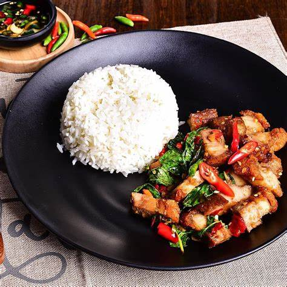
ส่วนผสม กะเพราหมูกรอบไข่ดาว
หมูกรอบ 1 ชิ้น
ใบกะเพรา 50 กรัม
ไข่ไก่ 1 ฟอง
กระเทียม 1-2กลีบ
น้ำตาลทราย 1 ช้อนโต๊ะ
น้ำมันหอย 2 ช้อนชา
น้ำมันพืช 2 ช้อนชา
พริก 5 เม็ด
น้ำซุป 1 ถ้วย
ถั่วฝักยาวหั่น 2 เส้น
น้ำปลา 2 ช้อนชา
วิธีทำ กะเพราหมูกรอบไข่ดาว
โคลกกระเทียมและพริกขี้หนูให้เข้ากัน พอละเอียด
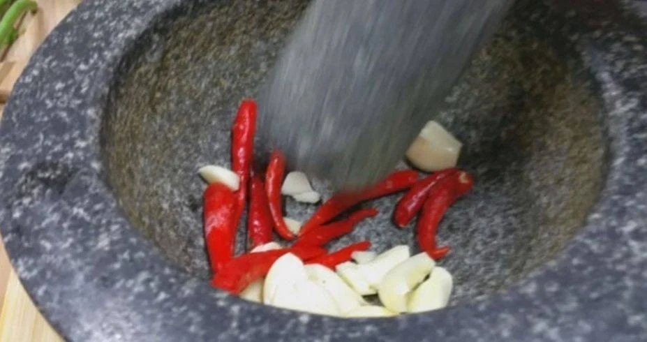
นำกระเทียมและพริกขี้หนูตำใส่ลงไปในกระทะที่มีน้ำมันพืชลงไปผัด
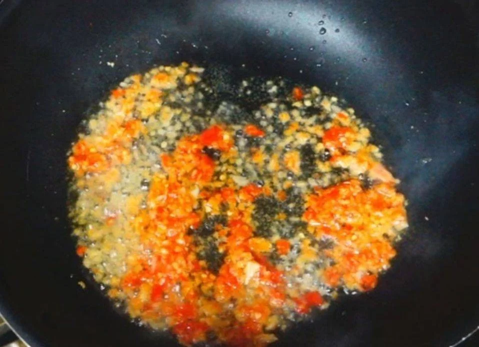
เตรียมหมูกรอบ
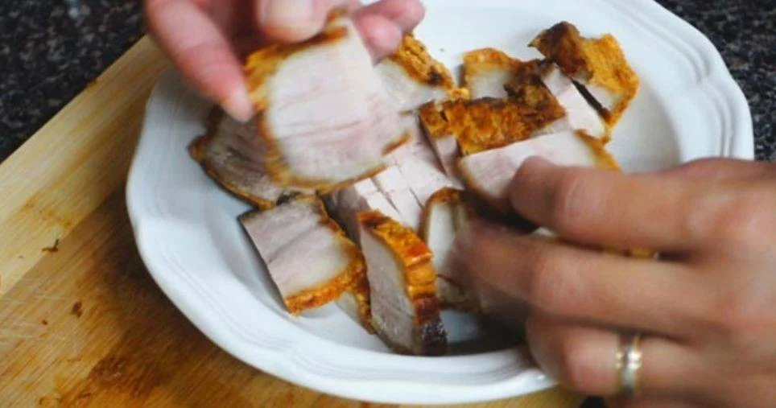
นำหมูกรอบลงไปผัดในน้ำพริกที่เตรียมไว้
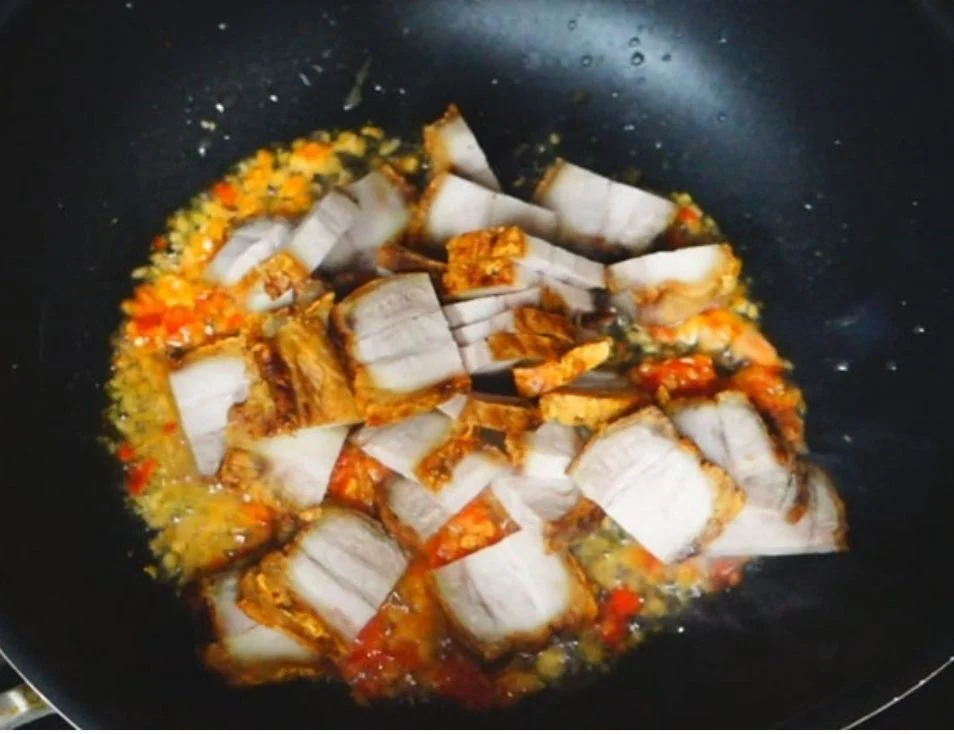
ใส่น้ำตาลทรายลงไปในหมูกรอบ
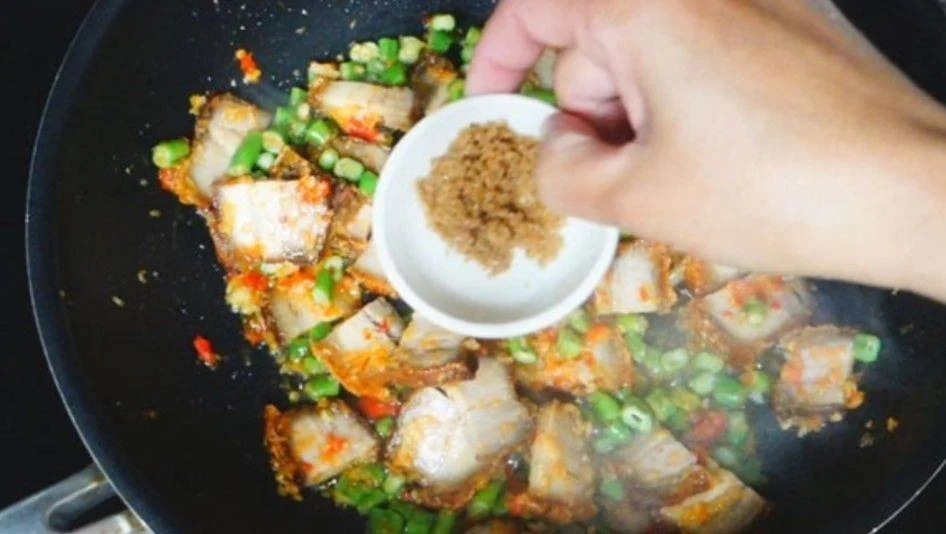
ใส่น้ำซุปลงไปเพื่อไม่ให้แห้ง
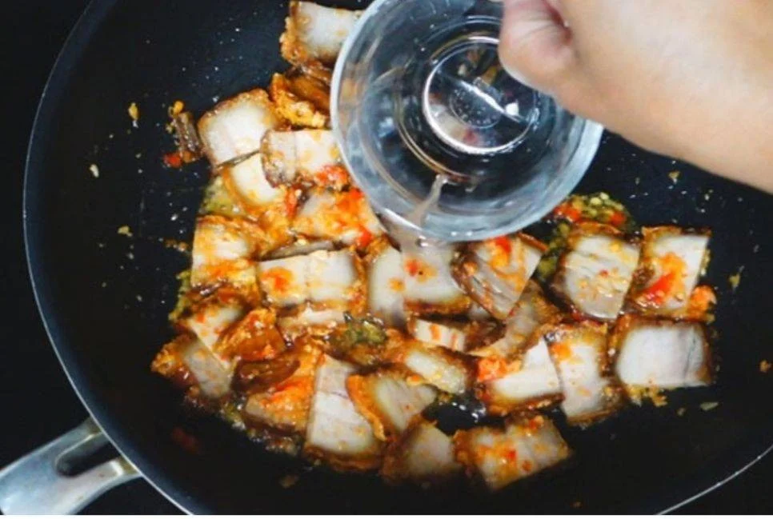
ใส่น้ำมันหอยลงไป
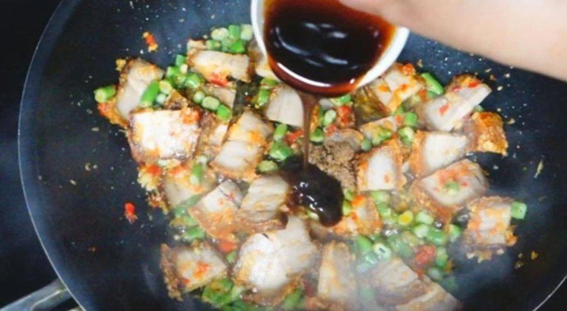
ใส่ถั่วฝักยาวแล้วผัดเครื่องปรุงให้เข้ากัน
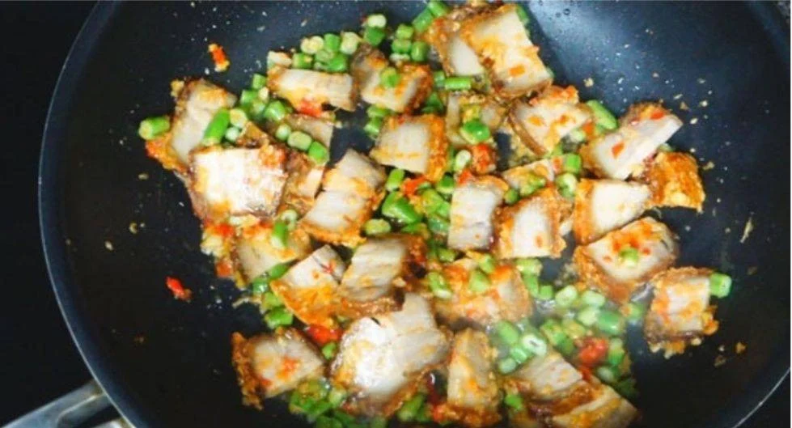
ใส่ใบกระเพราลงไป
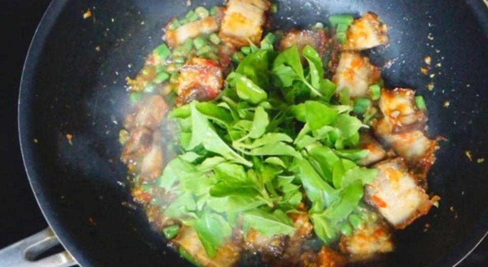
ตอกไข่ลงไปในน้ำมันร้อนๆ
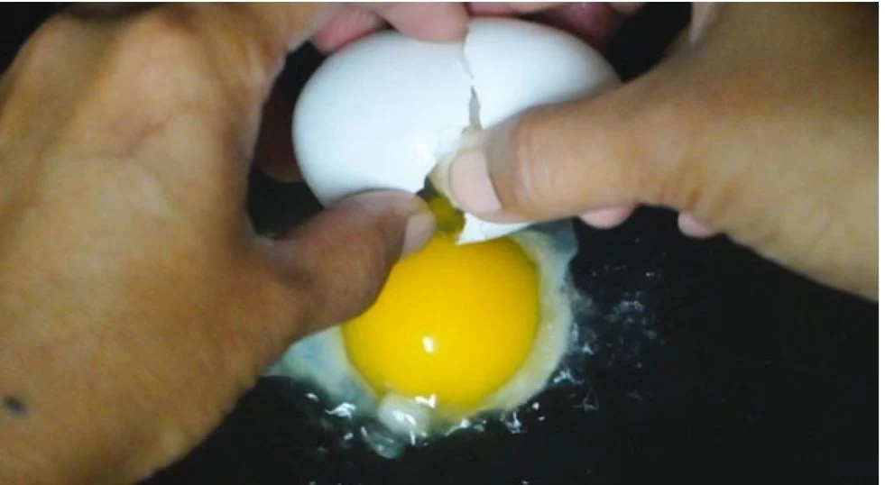
ทอดไข่จนไหม้ฟู
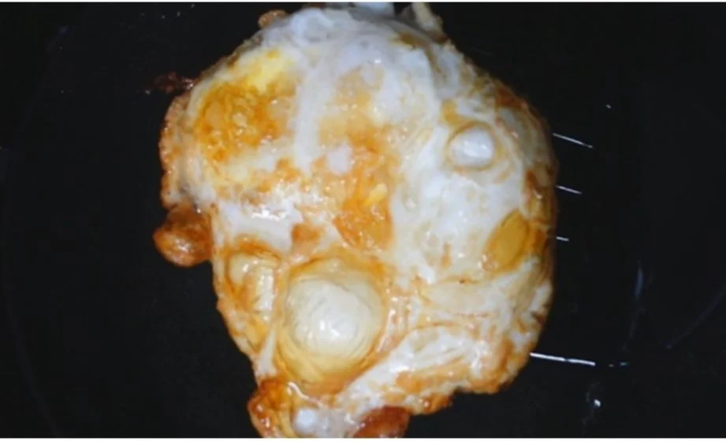
วางไข่ลงไปในจานพร้อมข้าวหอมมะลิสวยๆ
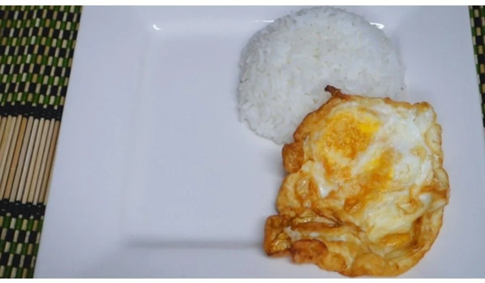
จัดจานพร้อมรับประทานได้เลยค่า
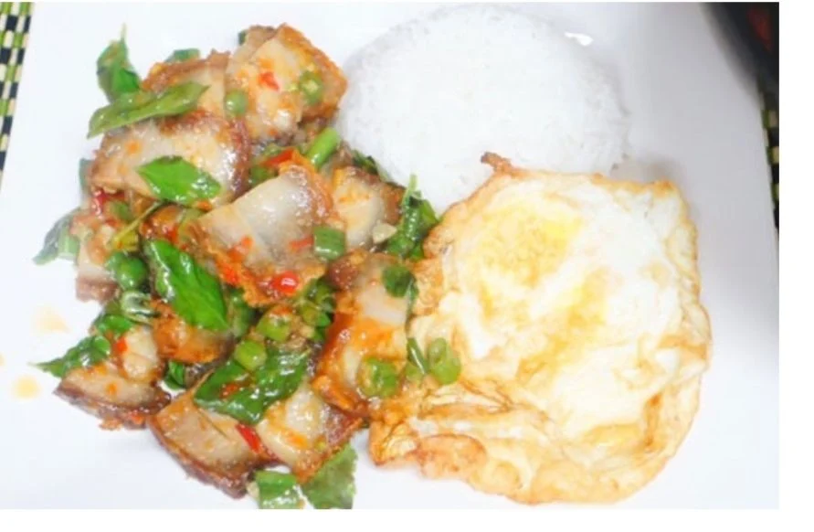
คุณค่าทางโภชนาการ ขนมจีนแกงเขียวหวานไก่
รายละเอียด
คุณค่าทางโภชนาการต่อหนึ่งหน่วยบริโภค
พลังงานทั้งหมด
826
ไขมันทั้งหมด
108%
ไขมันอิ่มตัว
0%
ไขมันไม่อิ่มตัวเชิงซ้อน
-
ไขมันไม่อิ่มตัวเชิงเดี่ยว
-
ไขมันทราน
-
คลอเรสเตอรอล
16%
โซเดียม
115%
โพแทสเซียม
12%
คาร์โบไฮเดรต
18%
โปรตีน
41%
Home